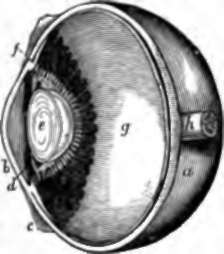
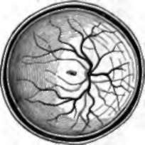
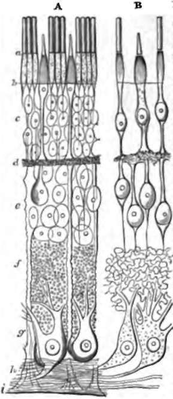
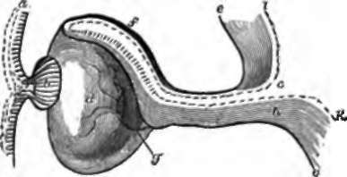

The Eyeball. Continued
Description
This section is from the book "Animal Physiology: The Structure And Functions Of The Human Body", by John Cleland. Also available from Amazon: Animal Physiology, the Structure and Functions of the Human Body.
The Eyeball. Continued
171. In the course of dissection, let the choroid coat be gently torn open and raised from the subjacent structures. If this be done with due care, there will be seen laid over a globe of transparent substance, a soft, whitish, pulpy membrane, the retina, or internal tunic of the eyeball. The retina is a nervous structure, containing the distribution of the optic nerve, a layer of nerve-corpuscles, and the nerve-terminations on which the rays of light act; it is adherent to the other tunics at the optic pore, the place where the optic nerve pierces; and it comes to an apparent margin in front, not far from the ciliary processes. This margin, in the human eye, is scalloped, and called the ora serrata. In the human eye also, when a perfectly fresh specimen is examined, the retina will be seen to be nearly transparent, and of a delicate pink tint; and there will be noticed, directly opposite the centre of the pupil, that is to say, a tenth of an inch outside the optic pore, a structure which does not exist in domestic animals, namely, the yellow spot of Summering, an elliptical mark, of a yellow colour, with a depression in the middle, called fovea centralis.
Fig. 116. Section of Human Eye. a, Sclerotic; b, cornea; c, conjunctiva; d, iris; e, crystalline lens closely invested with its capsule, and, above and below, sections of the canal of Petit, bounded in front by suspensory ligament, and behind by hyaloid membrane. The radiating white lines round the lens are the most prominent parts of the ciliary processes, the only parts uncovered with dark pigment ; f, ciliary muscle in section; g, retina, with ora serrata in front; h, optic nerve.
The retina, notwithstanding its being so thin, is one of the most complex structures in the body, and reveals this complexity when, after suitable preparation, it is examined under the microscope in sections made vertically through it. Close to the surface which rests on the transparent media of the eye, is a layer of fine nerve fibres, the expansion of the optic nerve, and beneath this a layer of multipolar nerve-corpuscles; and in these strata are the ramifications of the retinal artery, which breaks on into branches-at the optic pore, and is there placed on the surface of the retina. Subjacent to the multipolar corpuscles are other layers, marked by the presence of nuclear elements; and on the other side of these, resting on the choroidal epithelium, is what is termed the bacillary layer (fig. 118).
Fig. 117. Posterior Halt op Eyeball, exhibiting the retinal vessels ramifying from the optic pore, and, in the centre, the macula lutea of Sommering with its fovea centralis.
The bacillary layer, or Jacob's membrane, consists of multitudes of minute structures, called rods and cones, placed vertically to the rest of the retina, like the elements of a columnar epithelium. The rods are the more numerous, and consist of an outer and inner part of dissimilar nature: the cones have an outer part similar to the rods, while the inner part is swollen to a flask-shape, and they are more distinctly connected, through the medium of structure in the nuclear layers, with the multipolar corpuscles. In the yellow spot, only cones are present in the bacillary layer, and these are crowded together, and of smaller size than elsewhere; also the multipolar corpuscles are numerous, and there are no fibres of the optic nerve.
172. When the choroid coat has been divided, the transparent structures which occupy the cavity of the eyeball can be removed in one mass. They adhere most closely to the ciliary processes, but, when separated from them, they have the appearance of a limpid globe of delicate jelly, in the fore part of which is placed a bead of denser consistence, surrounded by a plicated collar, whose plications fit in between the ciliary processes. The main mass is called the vitreous humour; it consists of water entangled in meshes of transparent tissue, and is limited by a structure of firmer consistence, called from its limpidity the hyaloid membrane. The denser bead in front is the crystalline lens; and if a score be made along the face of it with a needle or a point of a knife, the capsule which retains it in its place will be raptured, and the lens will start out. It is expelled usually with a distinct degree of force, because the anterior wall of its capsule is strong and elastic: the posterior wall is fused with the hyaloid membrane. The plicated collar outside the capsule of the lens is called the zonule of Zinn; and if a small tube be gently pushed into it near to its inner edge, and air be blown in, there will be seen to be a cavity surrounding the periphery of the capsule, the anterior wall of which is formed by a plicated fibrous membrane distinct from the hyaloid. This cavity is called canal of Petit; and the membrane in front of it, extending from the most prominent part of the hyaloid membrane to the anterior wall of the capsule of the lens, is named the suspensory ligament.
Fig. 118. Retina, diagrammatic view of the structures seen in vertical section. A, General view. B, The nervous elements, a, Bacillary layer; b, membrana limitans externa; c, external nuclear layer; d, external granular layer; e, internal nuclear layer ; f, internal granular layer; g, ganglionic layer ; h, branches of optic nerve; i, membrana limitans interna. After Schultze.
The crystalline lens is about a third of an inch in diameter, and a fifth from front to back, and is more convex behind than in front It consists of layers of substance, one within another, like an onion; and the layers increase in density towards the centre, which is so firm that it is sometimes called the nucleus of the lens. The layers are composed of fibres extending from front to back, each with a nucleus, and remarkable in having serrated edges by which they fit into one another.
The capsule of the lens is in contact in front with the inner edge of the his, and there is a space left between it and the cornea. This is filled with fluid, the aqueous humour; and as much of the space as lies in front of the iris is called the anterior chamber; while the remaining part, forming a slight interval between the back of the iris and the lateral part of the lens, is distinguished as the posterior chamber.
Fig. 119. Development of the Eye, a diagram, a, Cuticular epithelium; b, lens developed by invagination of cuticle; c, entrance from the cavity of the brain into the primary optic vesicle; d, secondary optic vesicle; e, e, pia mater; f, choroid coat; g, retinal artery entering at the bottom of the cleft of the eye; h, cerebral substance continued into the optic nerve and retina; i, epithelium of cerebral cavity continued into the pigmentary epithelium of the choroid; k, the same continued into Jacob's membrane.
173. Reviewing the whole structure of the eyeball, it may be interesting to the student to know that, in the early embryo, it is developed partly from the integument and partly from the brain. The lens is originally an invagination of the skin, which becomes converted into a closed sac; and its fibres may be fairly considered as elements of the same series as the elongated cells of the deepest stratum of the cuticle.
The optic nerve, the retina, and the choroid, take rise from a vesicular outgrowth of the brain, comparable with the olfactory bulb (p. 204), and called the primary optic vesicle. The neck of this vesicle remains as the optic nerve, while the distal half of the vesicle becomes invaginated from below upwards and backwards against the other half, so as to form with it a double cup, the secondary optic vesicle, with a cleft in its lower part The pia mater or vascular covering in the half nearest to the optic nerve is developed into the choroid, and in the invaginated half remains as the retinal artery; while the nervous matter of the first-mentioned part disappears, and that of the invaginated portion is the main substance of the retina. Viewed in this light, the bacillary layer and the hexagonal pigment cells of the choroid are epithelial developments lining the opposed surfaces of the optic vesicle.* The vitreous humour, sclerotic, cornea, and iris, are later developments from subcutaneous tissue.
Continue to:
- prev: 169. The Eyeball
- Table of Contents
- next: 174. The Eye